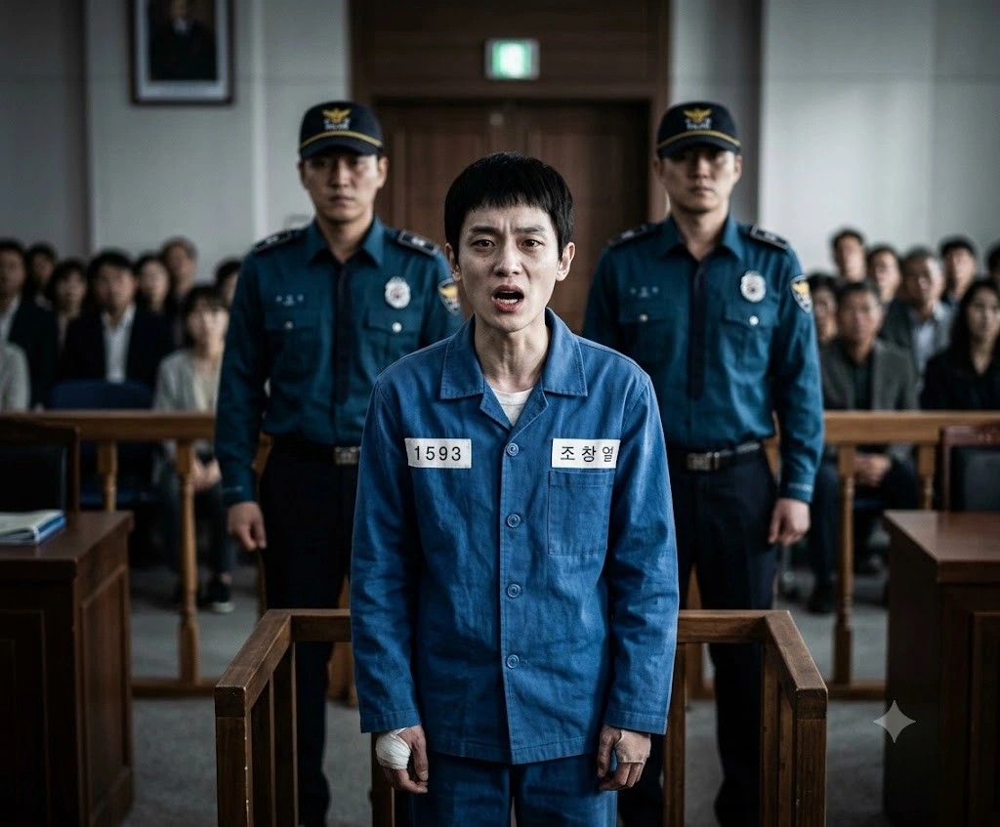

| 조창렬 (曺脹裂) Jo Chang-lyeol | |
|---|---|
 | |
| 출생 | 2002년 12월 3일 (만 23세) 덕빈북도 저천군 우구읍 우구리 |
| 거주지 | |
| 현재지 | 효빈광역시 안천구 융문동 203 (효빈교도소[1]) |
| 국적 | 대한민국 |
| 신체 | 159cm[2], 40~45kg 추정[3] |
| 가족 | 부모, 누나, 남동생 (본인의 막장 행보로 집안 파산 및 전원 영구 의절) |
| 학력 |
우구초등학교 (졸업) 우구중학교 (졸업) 우구고등학교 (졸업) 효빈대학교 (수산자원학 / 심리학 부전공 / 영구 퇴학(출교))[4] |
| 병역 | 육군 제3보병사단 상병 만기전역 → 병역면제(제적)[5] |
| 종교 | 기독교 (부활제일교회(...) 신자) |
| 별명(멸칭) | ㅈ창놈, 개창렬(...), ㅈㅊ년, 변태원숭이, 꼬맹이, ㅈ만한새끼, 벌레 |
| 범죄 및 형량 |
징역 19년 + 위치추적 전자장치 10년 부착 (15년: 통신매체이용음란, 협박, 강요미수, 상해(과실치상), 강제추행 미수, 접근금지 명령 위반, 법정모독, 모욕, 명예훼손 및 무고, 특수공용물건 손상 미수, 아동복지법 위반 + 4년: 법정모독 및 공직자 명예훼손 별건 기소) |
| 출소일 | 2042년 12월 4일 () |
효빈대학교 100년 역사상 최악의 흑역사이자, 찌질함과 능지처참의 극치를 보여주다 스스로 지옥불로 다이빙한 인간 조무사.
진보 성향을 표방하며 평범한(?) 23학번 복학생 행세를 했으나, 실상은 뼛속까지 극렬한 윤석열 지지자이자 과대망상, 심각한 열등감, 여성 혐오, 그리고 반사회적 인격장애가 끔찍하게 융합된 방사성 폐기물 그 자체다. 같은 학교 학우인 고노애를 상대로 역겨운 흑심을 품고 얼토당토않은 권력형 성범죄 협박을 시도했다가, 김시연을 위시한 '시연 사단'과 주성우, 그리고 효빈시의 절대 권력자들(박효빈 시장, 김성민 국회의원, 민부선 총장, 은권규 교수 등)의 역린을 완벽하게 건드려 자신의 청춘 19년을 통째로 압수당했다.
159cm라는 여성 평균에도 못 미치는 처참한 피지컬과 뼈다귀 같은 근력을 가졌음에도, 입만 열면 자신이 학창 시절 지역구를 주름잡던 일진 출신이라며 어이없는 허세를 부리고 다녔다. 당연히 현실은 동네북이자 철저한 샌드백이었으며, 그의 앰생(엠창인생)을 증명하는 화려한 과거 행적들은 다음과 같다.
조창렬의 뒤틀린 사상적 배경에는 '부활제일교회'라는 사이비성 짙은 극우 집단이 자리 잡고 있다. 이 교회는 효빈광역시 중구 원도심에 위치한 이단 시비가 끊이지 않는 폰지 사기 및 범죄 카르텔 집단으로, 예배 시간에 대놓고 특정 정당 지지를 강요하고 반대 세력을 '빨갱이 사탄'으로 규정하는 극단적인 정치적 광신도들이다. 조창렬은 어린 시절부터 이곳에서 세뇌당하며, 자신이 하는 모든 범죄와 혐오 행위를 '애국 보수의 성전(聖戰)'이라 착각하는 중증 과대망상에 빠지게 되었다.
하지만 이 새끼의 신앙심조차 결국 돈 앞에서는 휴지 조각이었다. 밀린 피시방 외상값을 갚기 위해, 자신이 10년 넘게 '아멘'을 외치던 바로 그 부활제일교회 본당 헌금함에 옷걸이에 씹던 껌을 붙여 쑤셔 넣고 지폐를 빼내려다 담임 목사(조광훈)에게 현행범으로 뒷덜미를 잡혔다. 변명이랍시고 "하나님의 은혜가 어디까지인지 믿음을 시험해 보려 했습니다!"라는 사이비 교주도 안 속을 신성모독적 개소리를 지껄였다가 그 자리에서 귀싸대기를 맞고 파문당했다.
사건의 발단은 윤석열 정부의 근로장학금 예산 대폭 삭감으로 시작되었다. 시급이 깎여 연간 81만 원의 필수 수입이 하루아침에 증발할 위기에 처한 생계형 알바생 고노애는, 벼랑 끝 멘탈을 부여잡기 위해 카카오톡 듀얼 프로필에 '대통령을 뿅망치로 때리는 조잡한 풍자 합성 짤'을 올렸다. 그러나 극도의 스트레스로 손을 바들바들 떨던 노애가 실수로 이 프로필 공개 대상에 철저한 남이었던(오히려 혐오하던) 조창렬을 포함시키고 만다.
평소 헐렁한 옷에 가려져 있던 고노애의 압도적인 피지컬과 예쁜 외모를 뒤에서 훔쳐보며 역겨운 흑심을 끓이고 있던 조창렬은, 이 짤을 보자마자 비뚤어진 분노와 함께 그녀의 몸을 취할 수 있겠다는 더럽고 악랄한 욕망에 사로잡힌다. 그는 즉각 노애에게 미친 협박 카톡을 날린다.
"노애야, 너 프사 그거 대통령 모욕죄랑 명예훼손으로 바로 철창행인 거 알지? 국가원수를 이따위로 합성해서 유포하면 사이버 수사대에서 바로 영장 나와. 마침 내가 국민의힘 의원실 쪽에 아는 형님들 많거든? 나랑 딱 하루만 모텔 가서 재미있게 놀아주면, 내가 선 써서 안 걸리게 조용히 덮어줄게."
"딱 3일 시간 준다. 그때까지 나랑 확실히 잘 생각 없으면 캡처본 바로 경찰청에 고발장 넣는다. 이거 신고 들어가면 너 최소 벌금형 수백만 원이야. 네 집안 사정에 감당이나 되겠냐? 똑바로 선택해."
법적 지식이 전무했던 노애는 이 협박이 성립 불가능한 개소리라는 것을 판단할 이성조차 마비되어 버렸다. 수백만 원의 벌금과 빨간 줄이라는 원초적 공포에 사로잡혀 며칠을 짐승처럼 발작하며 밥 한 술 뜨지 못하게 된다.
조창렬은 고노애가 겁에 질리자 더욱 기세등등해져 노애의 숨통을 집요하게 조였다.
"너 내일 안으로 나랑 잠 안 자면 다 고발할 거야. 빨리 결정해. 나 진짜 할 거다. 아니면 네 벗은 사진이라도 보내든가."
"이제 20시간 남았다. 어떻게 할래? 벌금 내고 싶은 거야?"
"오늘까지 답장 안 하면 알지? 아직 8시간 남았으니 잘 생각해 봐. 안 그러면 너 진짜 큰일 난다?"
하지만 노애가 억지로 끌려간 고깃집에서 폰이 바닥에 떨어지면서, 이 메시지를 우연히 목격한 김시연과 오이슬 등 친구들은 경악을 금치 못했다. 노애가 울부짖으며 조창렬이 159cm에 보노보노 PPT나 쓰는 변태 찌질이라는 실체를 폭로하자, 친구들의 분노는 활화산처럼 폭발했고 즉각 조창렬의 숨통을 완벽하게 끊어버릴 물리적/법적 처단 마스터플랜이 가동되기 시작한다.[6]
다음 날, 조창렬은 학과 내 평판이 이미 시궁창이라 잃을 게 없다는 마인드로 교양 수업과 필수 전공 수업 시간 내내 노애의 옆자리에 앉아 노골적인 수작을 부렸다. 그는 노애를 훑어보며 비릿한 미소를 지었다.
"오~ 오늘 좀 치는데? 왜, 나랑 진짜 잘 생각으로 꾸미고 왔냐?"
조별 활동 중 자료를 보는 척 고의로 노애의 흉부를 스치듯 문지른 그는, 뱀처럼 귓가에 독기 어린 성희롱과 협박을 속삭였다.
"야, 씨발련아. 언제 한다고 할 거야? 나 못 참겠다고. 여기서 소리 지르면 너 바로 모욕죄로 경찰서 끌려가서 뒤진다."
"야, 옷 위로 스치기만 해도 이런데 다 벗기면 얼마나 좋을지 좆나 기대가 되네~ ㅋㅋㅋ 야, 진짜 안 할 거냐? 나 진짜 경찰서에 고발장 넣는다니까?"
수업 끝날 무렵 의자를 빼서 노애를 덮치려 했으나 빈약한 팔 힘 때문에 실패한 그는, 이어진 전공 수업에서 기어이 노애가 앉으려는 타이밍에 맞춰 다시 의자를 당겨 노애를 넘어뜨리고 다리를 잡으려 했다. 그러나 노애의 체중과 반발력을 그의 나약한 손가락이 감당하지 못해 뼈가 '우두둑' 부러지며 짐승 같은 비명을 지르게 된다.[7]
"아아아아악!! 내 손 ㅆㅂ!!"
"하... 씨발년, 존나 무겁네. 너 돼지지? ...너 이제 딱 2시간 남았어. 씨발, 만약 오늘 나랑 안 자면 모욕죄에다가 내 손 아작 낸 상해죄까지 엮어서 무조건 쳐넣을 거야. 아 ㅆㅂ... 허벅지 밑에 말고 좀 더 위에 가슴 쪽을 잡았어야 했는데 ㅆㅂ..."
손가락이 으스러진 와중에도 발정 난 뇌를 멈추지 못한 이 구제불능의 쓰레기는, 주변 동기들의 "저 병신 새끼 또 혼자 발광하네"라는 멸시 속에서도 끝까지 성희롱을 이어갔다.
전공 수업 쉬는 시간, 노애의 폰에 뜬 김시연의 톡을 본 조창렬은 노애가 친구들에게 말했다고 착각하여 짐승 같은 악다구니를 퍼부었다.
"야, ㅆㅂ년아! 너 네 친구년들한테 말했냐?! 내가 분명히 경고했지? 네 친구년들한테 입 털면, 내가 그년들까지 싹 다 쳐먹어버린다고 했어, 안 했어?!"
수업이 끝나자 교수의 호출을 무시하고 쥐새끼처럼 도망친 조창렬은, 복도 끝 안 쓰는 대형 강의실 계단식 탁상 아래 좁은 사각지대로 노애를 강제로 끌고 들어갔다. 밀실 안에서 가방을 내팽개치고 침을 튀기며 옷을 벗으라 강요했다.
"야, 너 당장 벗어. 나 더 못 참으니까 당장 벗으라고 씨발년아!!!!!!!!! 한 번만 더 튕기거나 소리 지르기만 해봐, 너 안 하면 네 그 좆같은 합성 짤이랑 다 벗겨진 합성 사진까지 학교 에타에 싹 다 뿌려버린다!!"
그러나 이 모든 끔찍한 폭언과 정황은 복도에 바짝 붙어 있던 범죄심리학 교수와 김시연 사단에게 완벽하게 도청 및 채증되고 있었다.[8] 경찰차 사이렌이 울리고 문이 박살 날 듯 열리자, 사방이 꽉 막혔다는 사실을 깨달은 조창렬은 알량한 이성의 끈이 끊어지며 발악했다.
"야, 씨발년아!! 너 내가 누군 줄 알아?! 나 조창렬이야!! 나 씹양아치 출신이라 어차피 경찰 이 새끼들도 나 함부로 못 건드린다고!! 효빈대도 내가 이 새끼들 다 협박해서 들어온 거란 말이야!!"
"씨발련아!! 어차피 잡혀갈 거면, 너 한 번 먹고 잡힌다 씨발!! 딱 대, 씨발련아!!!!!!!!!"
미친 짐승처럼 노애의 멱살을 잡고 위로 덮쳐오며 그 스킨십에 짜릿한 희열을 느끼며 기분 나쁘게 웃던 찰나, 극도의 공포에 질린 노애가 마지막 생존 본능으로 코어 근력을 쥐어짜 그의 가슴팍을 양손으로 있는 힘껏 밀쳐냈다. 1미터 튕겨 나간 찰나, 조준을 마친 경찰관의 5만 볼트 테이저건이 조창렬의 가슴팍에 정통으로 꽂혔다.[9]
"아아아아아악-!! 끄흐윽, 꺽, 끄러러럭-!!"
그는 몸이 굳어지고 흰자위를 까뒤집으며 입에 거품을 물고 발작하다 기절하는 찌질함의 극치를 보여주었다.
테이저건 충격에서 깨어나 효빈경찰서 조사실로 끌려간 뒤에도 조창렬의 뇌 구조는 갱생되지 않았다. 5만 볼트 전압에도 상황 파악을 못한 채, 부어오른 손을 부여잡고 적반하장으로 고래고래 소리를 질렀다.
"아니, 경찰관님!! 진짜 억울합니다! 제가 피해자라고요!! 저년이 먼저 저를 깔아뭉개서 제 손가락 뼈가 부러졌다니까요?!"
그는 수갑이 채워진 손을 휘저으며 옆 조사실의 노애를 향해 입에 담에서 안 될 끔찍한 인신공격을 토해내어 노애의 과거 섭식장애 트라우마를 처참하게 후벼 팠다.
"어우 씹, 저런 징그러운 돼지새끼를 제가 미쳤다고 먹을 생각이나 했겠습니까?! 제가 눈이 삐었습니까?! 몸매도 뚱뚱하고 볼품없어서 줘도 안 가질 년인데, 저년이 지 혼자 착각해서 오버 떠는 겁니다! 저는 그냥 조별 과제 얘기 좀 하자고 빈 강의실로 부른 것뿐이라고요!"
심지어 자신의 스마트폰을 증거랍시고 내밀며, 풍자 합성 짤을 빌미로 자신을 애국시민이라 칭하는 경이로운 개논리를 펼쳤다.
"자, 이것 좀 똑똑히 보십시오! 이년이 현직 대한민국 대통령을 야구 빠따로 때리고 뿅망치로 패는 합성 사진을 만들어 유포한 중범죄자입니다!! 국가원수 모욕죄에 명예훼손 아닙니까?! 이런 빨갱이 같은 반국가적 범죄자를 당장 구속하셔야지, 왜 정당하게 지적하고 훈계하려 한 애국시민인 저를 체포하십니까?! 제 손 부러진 상해죄랑 저 국가원수 모욕죄까지 싹 다 합쳐서 저년 당장 철창에 쳐넣으세요!!"
하지만 담당 베테랑 형사로부터 "국가원수 모욕죄는 폐지된 지 40년이 넘었다, 이 무식한 새끼야. 넌 통매음, 강요, 감금 미수, 무고죄까지 추가될 현행범이다"라는 차가운 팩트 폭격을 맞는다.[10] 안타깝게도 조창렬의 '돼지새끼' 망언 때문에 옆방의 고노애가 심인성 쇼크로 실신하게 되며, 시연 사단은 남은 일말의 자비조차 버리고 조창렬의 숨통을 완벽히 끊기로 결의하게 된다.
어이없게도 초범이라는 핑계와 처참한 지능 탓에 법적 요건을 다 채우지 않아 불구속 수사(귀가 조치)로 풀려난 조창렬은, 앙심을 단단히 품고 대낮 공원에서 고노애를 우연히 발견하자 접근금지 명령(100m 이내)을 개나 줘버린 채 짐승 같은 거친 쇳소리를 내며 미친 듯이 돌진했다.
하지만 곁을 지키던 주성우가 극대노하여 앞을 가로막으며 정당방위 선에서 가슴팍을 거칠게 팍 밀쳐냈다. 바닥을 뒹굴었음에도 조창렬은 찰나의 순간 노애에게 손이 닿았다는 사실에 '정조를 빼앗았다'는 미친 뇌내망상에 빠져 기분 나쁘게 히죽히죽 웃으며 일어났다.
"히히히... 첫 번째는 내가 뺏었으니, 이제 다음 것도 내놔라 ㅆㅂ년아!!"
그는 자신을 보호하며 서 있던 나수미에게도 접근해 똑같은 성추행 수작을 부리다 빗나가자 분통을 터뜨리며 적반하장으로 화를 냈다.
"야, 이 껌딱지년아!!! 에이 ㅆㅂ ㄲ리다 말았네 ㅆㅂ!!"
이 망언에 성우가 척추를 접어버리겠다며 튀어나가려던 찰나, 동네 어깨 형님들이 그를 제지하며 조창렬의 최대 콤플렉스인 작은 키(159cm)를 정통으로 조롱했다. 조창렬은 개처럼 얼굴이 시뻘게져서 악을 쓰며 발악했다.
"야 이 개새끼야!!! 나 성인이다 ㅆㅂ 개 ㅈ같은 돼지 새끼들아!!!!!!!!!!! 나 양아치라고!! 나 칼 가지고 있어! 니들 다 ㅉ러버린다!!"
결국 출동한 경찰에 의해 '접근금지 명령 위반' 및 '강제추행 미수'로 가중처벌 대상임이 고지되며 유치장으로 완벽하게 구속 연행되었다. 경찰차에 끌려가면서도 끝까지 추악한 본성을 버리지 못하고 지랄 발광을 멈추지 않았다.
"고노애 이 돼지새끼야!!!!!!!!!!! 네 꺼 언젠간 내가 꼭 먹고 만다 ㅆㅂ!!!!!!!"
대한민국 사법 역사상 유례를 찾기 힘든 최악의 법정 자폭 쇼. 구치소 유치장에 완벽히 수감된 그는, 이송윤과 전개욱 일당의 대환장 파티나 조창렬 부모의 시청 광장 깽판 등 바깥세상의 난동에는 참여하지 못했으나, 법정에서 그 모든 업보를 배로 돌려받게 된다.
경찰 구속 직후, 효빈대학교 학생처에서 보낸 '출교(Permanent Expulsion) 통지서'를 우편으로 받아든 조창렬. 대학교에서 잘리면 수능을 다시 봐서 지잡대라도 가겠다는 얄팍한 구명정을 꿈꿨으나, 재입학조차 불가능한 학적 말살을 확인하고 창살을 부여잡고 발작을 일으켰다.
"뭐... 출, 출교?! 아 씨발, 퇴학도 아니고 출교?! 야, 나 이러면 다른 대학 아예 못 가잖아!!"
1심 효빈지방법원 형사재판부. 푸른 수의를 입고 피고인석에 선 조창렬 일당은 징역의 공포는커녕 반성의 기미가 전혀 없었다. 집행유예나 3~5년 형을 기대하며 전과자 마크를 동네 양아치 훈장쯤으로 여긴 이들은, 심문이 시작되자 짝다리를 짚듯 불량하게 서서 마이크를 잡고 성범죄를 부인하며 2차 가해를 난사했다.
"아니 판사님! 억울하다니까요! 저기 증인석에 앉은 고노애 저년, 덩치만 산만 한 돼지새끼에 가슴만 크고 얼굴은 개빻은 못생긴 년인데, 도대체 제가 왜 저런 걸 먹으려고 덤볐겠습니까?! 강제추행 요건 자체가 성립이 안 된다고요! (...) 저 년이 악질 페미니스트라서 앙심 품고 저렇게 발악을 하는 겁니다!!"
"맞습니다! 그리고 저기 나수미! 저 껌딱지 같은 년 (...) 야, 나수미! 내가 여기서 나가면 너부터 콱 밟아버릴 줄 알아!"
"그리고 고노애 저 돼지 씹년!! 넌 씨발, 내가 나가면 언젠간 기필코 따먹고 만다!! 딱 기다려 썅년아!!"
그러나 그들의 재판을 담당한 인물은 원리원칙의 화신이자 지독한 히카와 사요 오시인 하성휘 부장판사였다. 하 판사는 이들이 과거 기소유예 전력을 매섭게 언급하며 얄팍한 초범 주장을 박살 내고 징역 12년과 전자발찌 10년의 철퇴를 내리꽂았다. 그제야 사태를 파악한 조창렬은 오줌을 지리며 발작했다.
"판, 판사님!! 이건 무효입니다!! 저희 진짜 억울합니다! 저희 셋 다 태어나서 감빵 한 번 안 갔다 온 '초범'이라고요!! 아무리 그래도 초범한테 징역 12년이 말이 됩니까?! 이거 항소할 겁니다!!"
"판, 판사님!! 제가 법을 몰라서 그랬습니다!! 한 번만 용서해 주십..."
결국 사색이 되어 짐승처럼 질질 끌려 나가는 비참한 몰골로 1심이 끝났다.
1심 선고 직후 12년에 이성의 퓨즈가 끊어진 조창렬은 방청석을 향해 쌍욕을 퍼부으며 테이블 위의 플라스틱 물통을 고노애 일행에게 풀스윙으로 던지려 발악했다.
"야, 이 씨발 좆같은 걸레 년들아!!!!!!!!!! 내가 여기서 나가면 니들 싹 다 뒤졌어, 알아?!!!!!!"
건장한 법정경위 4명에게 목과 양팔이 꺾여 완벽하게 제압당한 그는 독방에 갇힌 후에도 "항소하면 무조건 감형될 거다"라는 뇌내망상을 돌리며 항소장을 냈다. 하지만 항소심 재판장(이치가야 아리사 오시) 앞에서 이들은 다시 한번 최악의 2차 가해를 저질렀다.
"맞습니다! 그리고 저기 앉아있는 고노애 저년은 (...) 지가 먼저 빈 강의실에서 저를 유혹하려다 실패하니까 미투로 저를 담근 거라고요! 저런 못생긴 년을 제가 왜 먹겠습니까?!"
이들의 궤변은 지자체장, 국회의원, 대학 총장, 심지어 증언에 나선 전문 교수(은권규)까지 싸잡아 "좌파 카르텔", "스폰서"라며 허위 비방을 생중계하는 지경에 이르렀다. 쌍방 항소 상태에서 자행된 이 끔찍한 2차 가해에 2심 재판장은 원심을 파기하고 오히려 징역 15년으로 형량을 3년이나 가중해 버린다. 설상가상으로 법정 속기록에 이들의 망언이 완벽히 박제되면서, 박효빈 시장, 김성민 의원, 민부선 총장 등 거물급 인사들의 초호화 변호인단이 융단폭격 고소를 쏟아부었다.
"네...? 파기...? 지, 징역 15년이요...?! 깎아달라고 항소했는데... 왜 3년이 더 늘어납니까?! 판사님!! 이거 사법살인 아닙니까?!!"
항소심 법정에서 뱉은 뇌피셜 배설물은 법정 속기록에 영구 박제되었고, 이는 거물급 조력자들의 분노를 샀다. 박효빈 시장은 30억 원대의 징벌적 배상 청구와 모든 재산 가압류를 지시했으며, 김성민 의원, 민부선 총장, 은권규 교수가 연합하여 수십억 원대의 민사 소송과 별건 명예훼손 형사 고소를 진행했다.
대법원 최종 판결을 앞둔 구치소 독방. 조창렬 일당은 대법원장이 보수 인사라 자신들을 구원해 줄 것이라 굳게 믿으며 크리스마스 출소를 꿈꿨다.
"맞아 ㅆㅂ! 대법원까지 가면 무조건 형량 깎이는 거 뉴스에서 존나 많이 봤어. 아무리 못해도 징역 3년 이하로 떨어져서 집행유예로 당장 나갈 수 있다고! 나가면 고노애 그 돼지년이랑 우리 담근 새끼들 싹 다 명예훼손으로 역고소 쳐버리자 ㅋㅋㅋ"
그러나 법률심인 대법원은 이들의 허접한 상고를 단 1초의 망설임도 없이 심리불속행 기각 처리했다.[11] 여기에 명예훼손 및 무고로 진행된 별건 재판으로 4년이 추가되어 최종적으로 도합 19년 형이 확정된다.
교도관이 던져준 서류 봉투에서 '상고 기각'을 확인한 이들은 다리에 힘이 풀려 차가운 시멘트 바닥에 엎어졌다.
"아아아아악!! 15년!! 15년이라고!! 나 서른다섯 넘어서 나가야 한다고!! 안 돼!! 나 여기서 못 살아!!"
머리를 쥐어뜯으며 짐승처럼 울부짖는 완벽한 절망에 빠졌다.
2026년 8월, 15년 형 확정 후에도 반성 없이 윤간 협박을 멈추지 않던 이들은 명예훼손 및 모욕 별건 재판 대법원 선고로 4년 추가 실형이 확정되어 도합 19년 형을 살게 되었다. 2042년 12월 4일에나 출소하게 된 것이다.
천문학적인 민사 배상금으로 부모의 쥐꼬리만 한 예금까지 모조리 압류당해 집안이 멸문지화 당하고 연이 끊겼다. 노역 영치금의 90%가 압류되어 컵라면 하나 못 사 먹고 매일 밤 배를 주리며 동료들과 주먹질을 하다 독방에 갇히는 신세가 되었다. 쿨 사동(요시찰·중경비 구역)에서 먹이사슬 최하층으로 굴러떨어져 흉악범들의 멸시 속에서 변기 청소와 걸레질을 도맡아 하고 있다.
교도소 TV와 신문을 통해 자신이 짓밟으려 했던 고노애와 피해자들은 대학 부학생회장, 로스쿨 진학, 재선 시장 등으로 찬란하게 비상하는 모습을 강제로 시청 중이다. 자신이 뱉은 말의 대가에 뼈가 으스러지도록 절망하고 눈물을 쏟고 있다.
"내가 뱉은 그 몇 마디가... 내 청춘 19년을 날리고, 우리 집안을 이렇게 거지로 만들 줄은 몰랐어..."